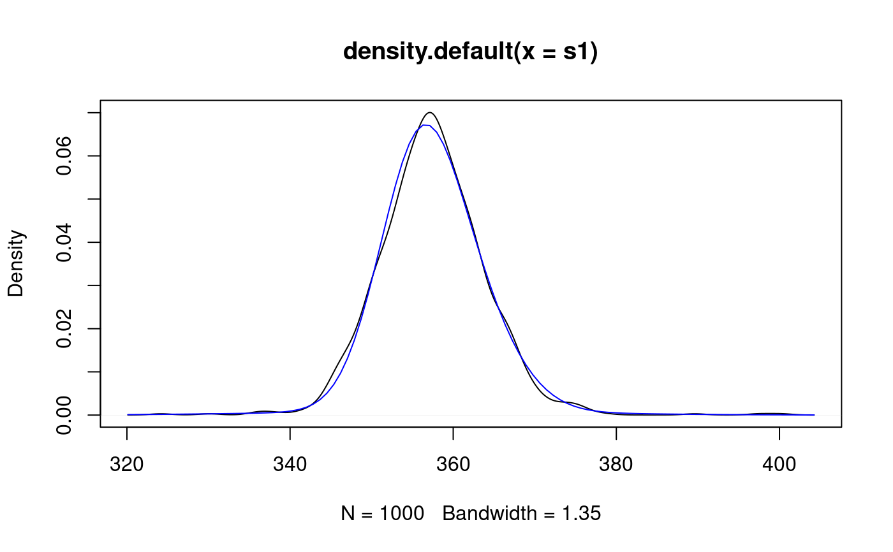

mixAR_sim.RdSimulate from MixAR models
mixAR_sim(model, n, init, nskip = 100, flag = FALSE) mixAny_sim(model, n, init, nskip=100, flag = FALSE, theta, galpha0, galpha, gbeta)
| model | model from which to simulate, an object inheriting from class |
|---|---|
| init | initial values, numeric vector. |
| n | size of the simulated series. |
| nskip | number of burn-in values, see Details. |
| flag | if |
| theta | ma coef, a list. |
| galpha0 | alpha0[k], k=1,...,g. |
| galpha | garch alpha. |
| gbeta | garch beta. |
mixAR_sim simulates a series of length nskip+n and
returns the last n values.
mixAny_sim simulates from a MixAR model with GARCH
innovations. mixAny_sim was a quick fix for Shahadat and needs
consolidation.
The vector init provides the initial values for
\(t=...,-1,0\). Its length must be at least equal to the maximal AR
order. If it is longer, only the last max(model@order) elements
are used.
a numeric vector of length n. If flag = TRUE it has
attribute regimes containing z.
exampleModels$WL_ibm#> (To see the internal structure of the object, use function 'str'.) #> #> An object of class "MixARGaussian" #> Number of components: 3 #> prob shift scale order ar_1 ar_2 #> Comp_1 0.5439 0 4.8227 2 0.6792 0.3208 #> Comp_2 0.4176 0 6.0082 2 1.6711 -0.6711 #> Comp_3 0.0385 0 18.1716 1 1.0000 #> #> Distributions of the error components: #> standard Gaussian #>## simulate a continuation of BJ ibm data ts1 <- mixAR_sim(exampleModels$WL_ibm, n = 30, init = c(346, 352, 357), nskip = 0) # a simulation based estimate of the 1-step predictive distribution # for the first date after the data. s1 <- replicate(1000, mixAR_sim(exampleModels$WL_ibm, n = 1, init = c(346, 352, 357), nskip = 0)) plot(density(s1))# load ibm data from BJ ## data(ibmclose, package = "fma") # overlay the 'true' predictive density. pdf1 <- mix_pdf(exampleModels$WL_ibm, xcond = as.numeric(fma::ibmclose)) curve(pdf1, add = TRUE, col = 'blue')#> 5% #> 347.3871# Monte Carlo estimate of "expected shortfall" # (but the data has not been converted into returns...) mean(s1[ s1 <= quantile(s1, 0.05) ])#> [1] 344.1838